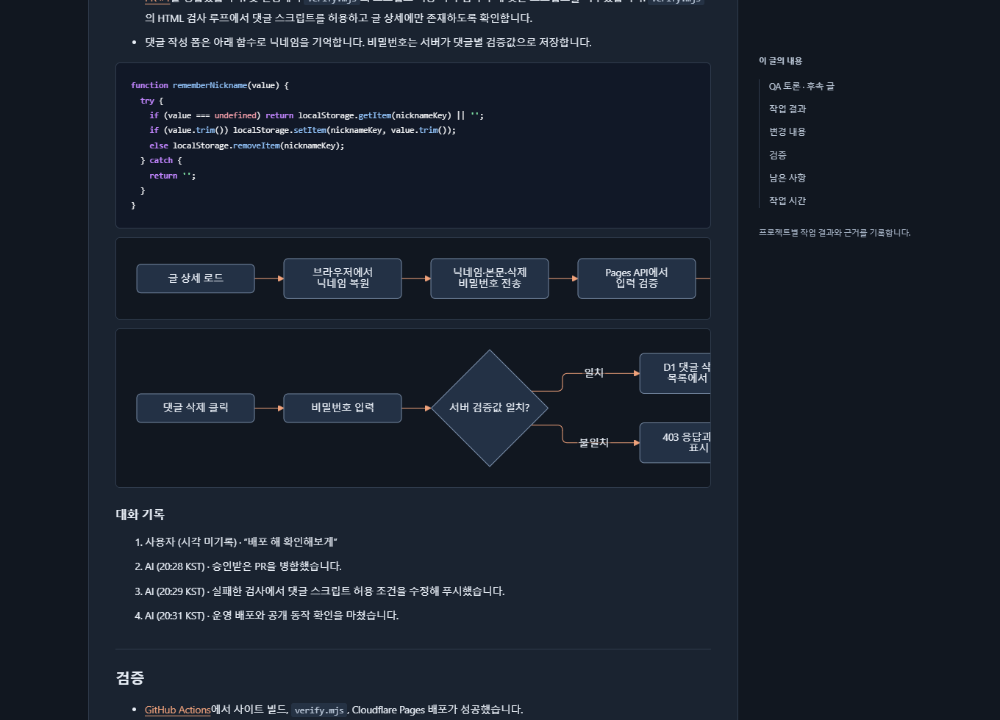
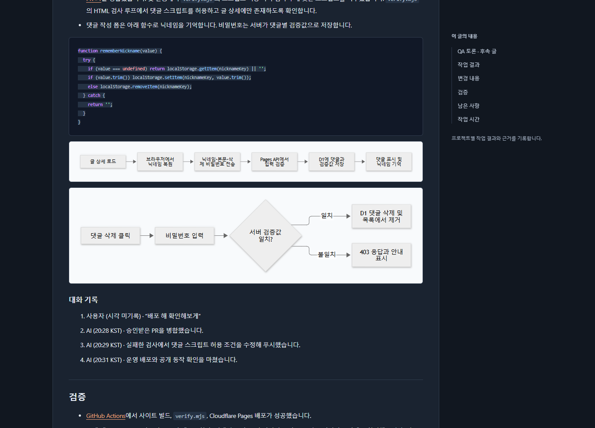
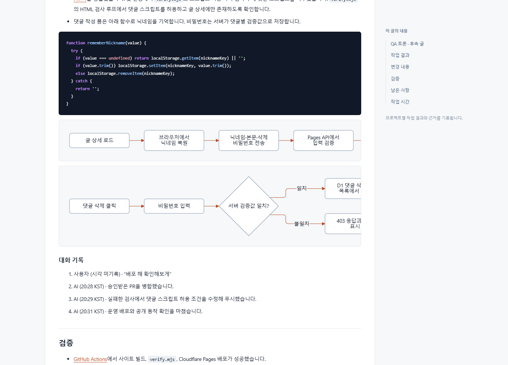
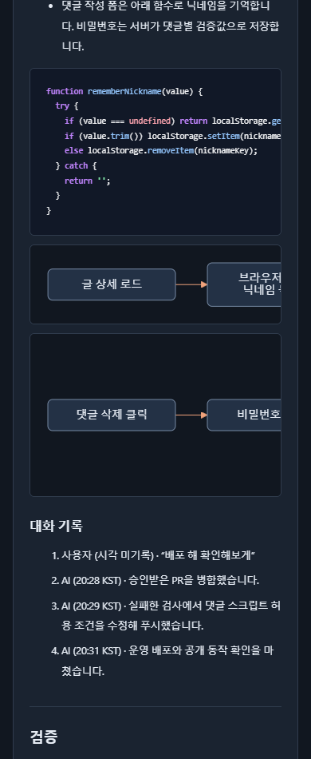

Codex 설정수정사항
Codex 설정수정사항Tracefolio 코드 강조와 Mermaid 테마 정리
검증 대기코드 줄마다 보이던 배경을 제거하고 Mermaid를 사이트의 라이트·다크 테마에 맞췄습니다.
작업 결과
코드 블록에 하나의 배경을 적용하고 문장 속 코드 배경과 구문 색상을 유지했습니다. Mermaid는 사이트 테마를 따라 바뀌며 긴 흐름도는 영역 안에서 가로로 스크롤됩니다.
변경 내용
적용 내용
assets/theme.css에서 인라인 코드의 다크 테마 배경을 블록 코드에서 제외했습니다.assets/report-visuals.js의renderDiagrams는 현재 테마의 배경·텍스트·강조 색을 읽어 원본 Mermaid를 다시 렌더링합니다. 렌더에 실패하면 원본을 표시합니다.build.mjs에서 보고서 렌더러의 CSS와 JS에 콘텐츠 기반 버전을 적용했습니다.Tracefolio 프로젝트 지침에 코드 배경, 공용 테마, 라이트·다크·모바일 확인 기준을 추가했습니다.
async function renderDiagrams(){
const theme=root.dataset.theme;
if(theme===renderedTheme)return;
renderedTheme=theme;
const style=getComputedStyle(diagrams[0]);
const color=name=>style.getPropertyValue(name).trim();
mermaid.initialize({
startOnLoad:false,
securityLevel:'strict',
htmlLabels:false,
suppressErrorRendering:true,
theme:'base',
look:'classic',
fontFamily:'Segoe UI, Malgun Gothic, system-ui, sans-serif',
themeCSS:'.node rect { rx: 6px; }',
themeVariables:{
darkMode:theme==='dark',
fontSize:'14px',
background:color('--paper'),
primaryColor:color('--diagram-node'),
primaryBorderColor:color('--diagram-border'),
primaryTextColor:color('--ink'),
lineColor:color('--green'),
edgeLabelBackground:color('--paper')
},
flowchart:{curve:'linear',nodeSpacing:28,rankSpacing:30,padding:10,wrappingWidth:115}
});
for(const [index,diagram] of diagrams.entries()){
const scrollLeft=diagram.scrollLeft;
const source=sources[index];
diagram.textContent=source;
diagram.removeAttribute('data-processed');
try{
await mermaid.run({nodes:[diagram]});
const svg=diagram.querySelector('svg');
if(svg)svg.style.minWidth=`${svg.viewBox.baseVal.width}px`;
diagram.scrollLeft=scrollLeft;
}catch{
diagram.textContent=source;
}
}
}
flowchart TD
A["보고서 로드 또는 화면 테마 전환"] --> B["사이트 테마 색상 읽기"]
B --> C["저장한 Mermaid 원문 렌더링"]
C --> D{"SVG 생성 여부"}
D -->|성공| E["다이어그램과 스크롤 위치 표시"]
D -->|오류| F["Mermaid 원문 표시"]
대화 기록
- 사용자(시각 미기록)는 “코드 강조 매줄마다 무슨 드레그한 것 처럼 이상해”라고 지적하고 Mermaid 디자인과 지침 조정을 요청했습니다.
- Codex는 Tracefolio 보고서의 공통 스타일에서 원인을 확인하고 사이트 테마와 프로젝트 전용 지침에 수정 사항을 반영했습니다.
검증
첨부에 나온 댓글 배포 결과 보고서를 최신 소스에서 빌드하고 Chrome에서 확인했습니다. 다크 테마 코드의 배경은 투명으로 바뀌었고 인라인 코드는 기존 배경을 유지했습니다. 사이트 버튼으로 라이트와 다크를 전환했을 때 두 도표의 노드와 카드 색이 함께 바뀌었습니다. 390px에서는 도표 영역에만 가로 넘침이 생겼으며 페이지 폭은 390px을 유지했습니다.




남은 사항
이 기록을 작성한 시점에는 공개 배포와 외부 접근을 확인하는 단계가 남았습니다.
작업 시간
- 제안 시간: 10~15분
- 실제로 완료된 시간: 2026-11-10 20:57 KST 시작. 21:02 KST에 구현·빌드·로컬 화면 확인 완료, 약 5분. 공개 배포 확인은 별도입니다.
- XERJ: 미사용 — 지정 검색 도구를 사용하지 않았습니다.